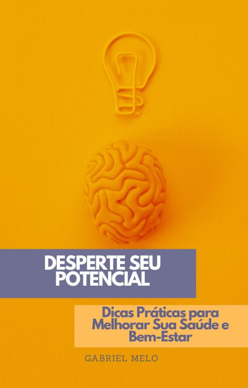

Você sente que sua rotina corrida impede você de cuidar da sua saúde? Está cansado(a) de dietas malucas, promessas vazias e métodos complicados?
Saiba que você não está sozinho(a). Pequenas mudanças podem fazer uma grande diferença. Descubra como!
Quero meu e-book!
O que você vai aprender?
- Como ter mais energia e disposição no dia a dia.
- Pequenas mudanças na alimentação que fazem grande diferença.
- Estratégias simples para reduzir o estresse e a ansiedade.
- Como criar uma rotina saudável sem gastar horas na academia.
- Dicas práticas para melhorar a qualidade do seu sono.
Por que este eBook é para você?
- Se você sente que precisa cuidar melhor da sua saúde, mas não sabe por onde começar.
- Se já tentou várias estratégias, mas nenhuma se encaixou no seu estilo de vida.
- Se quer ter mais disposição, produtividade e bem-estar sem mudar drasticamente sua rotina.
Quem sou eu para falar sobre isso?
Meu nome é Gabriel Melo, e assim como você, já senti na pele os desafios de manter uma vida saudável enquanto concilio trabalho, estudos e rotina acelerada.
Com o tempo, descobri que pequenas mudanças podem transformar completamente a forma como nos sentimos e vivemos. E foi isso que me motivou a reunir neste eBook dicas práticas que realmente funcionam!
Perguntas Frequentes (FAQ)
Como recebo o eBook?
Após a confirmação do pagamento, você receberá um link para download imediato no seu e-mail.
O conteúdo serve para qualquer pessoa?
Sim! As dicas são práticas e adaptáveis a qualquer rotina, sem exigir mudanças radicais.
Preciso fazer academia ou seguir uma dieta rigorosa?
Não! O foco do eBook é ensinar hábitos fáceis e eficazes que você pode incluir no seu dia a dia sem sofrimento.
Garanta agora seu eBook e comece a transformação na sua vida!
💡 De: R$69,90
💡 Por Apenas: R$37,00
Preço promocional por tempo limitado!
🔘 Quero Meu eBook Agora!